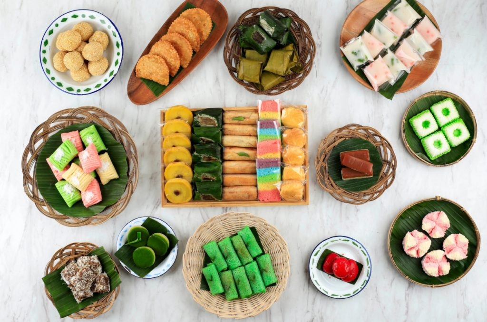
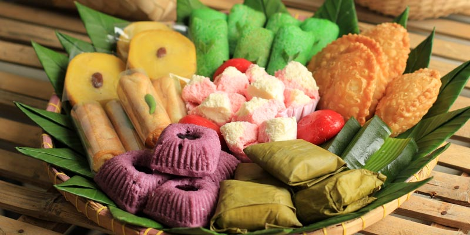
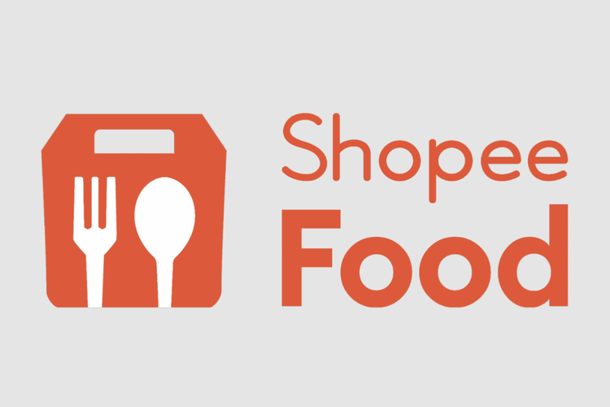
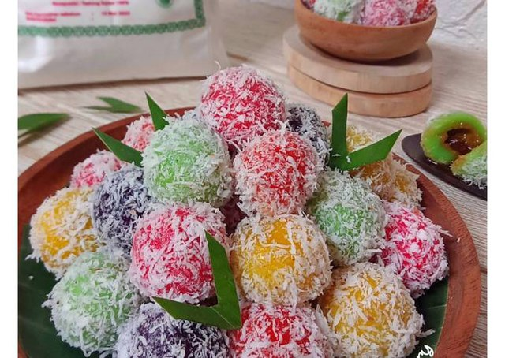
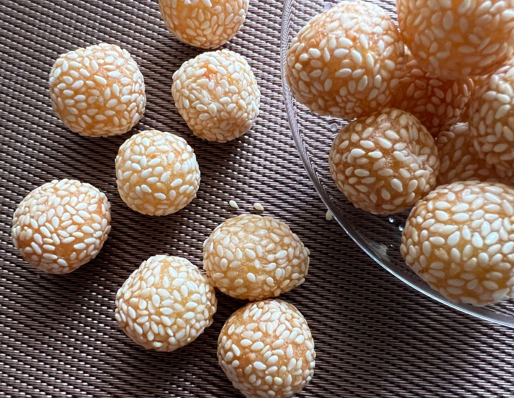
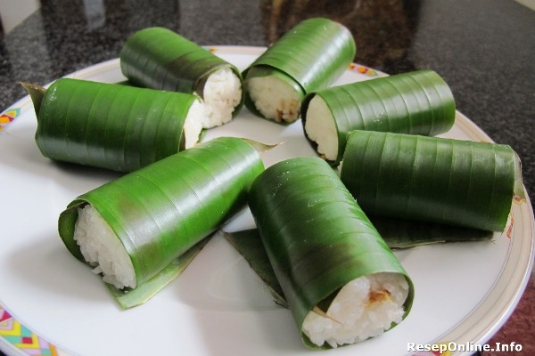

Profil Toko Kue Nusantara

Toko Kue Nusantara didirikan dengan semangat untuk memperkenalkan
kekayaan kuliner Indonesia kepada dunia. Berpusat di kota yang kaya
akan budaya, toko ini merupakan destinasi yang ideal bagi siapa pun
yang ingin menjelajahi berbagai kue tradisional Nusantara.
Kami menyajikan beragam kue-kue khas dari berbagai daerah di
Indonesia, mulai dari kue basah yang lembut dan gurih hingga kue
kering yang renyah dan manis. Setiap kue diproduksi dengan cinta dan
dedikasi, menjadikan setiap gigitan sebuah pengalaman yang memikat.
Kami memahami betapa pentingnya kualitas dalam setiap produk yang
kami hasilkan. Oleh karena itu, kami hanya menggunakan bahan-bahan
terbaik dan alami dalam setiap resep kue kami. Setiap tahap
pembuatan kue dilakukan dengan cermat dan teliti, sehingga kami
dapat memberikan produk yang konsisten dalam rasa, tekstur, dan
penampilan.
Produk Penjualan Kue

Toko Kue Nusantara menghadirkan beragam kue tradisional Nusantara
yang lezat dan autentik, mengusung cita rasa Indonesia yang kaya
akan rempah-rempah dan bahan-bahan alami. Setiap kue diproses dengan
teliti dan menggunakan bahan-bahan berkualitas terbaik, sehingga
menghasilkan produk yang berkualitas tinggi dan memikat lidah para
penikmatnya.
Dari kue-kue basah seperti klepon, onde-onde, dan lemper. Toko Kue
Nusantara menghadirkan pilihan yang beragam untuk memenuhi selera
penggemar kue tradisional. Selain itu, Toko Kue Nusantara juga
menawarkan kemasan yang menarik dan cocok untuk dijadikan sebagai
oleh-oleh khas dari Indonesia.
Dengan sentuhan tradisional yang khas dan rasa yang autentik,
produk-produk dari Toko Kue Nusantara menjadi pilihan yang sempurna
untuk dinikmati dalam berbagai acara, atau sebagai hadiah istimewa
bagi keluarga dan teman. Rasakan kelezatan dan kehangatan Indonesia
dalam setiap gigitan kue dari Toko Kue Nusantara!
| No |
Nama Makanan Kue |
Harga (pcs) |
| 1 |
Kue Klepon |
Rp 3.000 |
| 2 |
Kue Onde-onde |
Rp 3.000 |
| 3 |
Kue Lemper |
Rp 5000 |
Pemesanan


Penjualan kue Nusantara secara online dapat dilakukan melalui
platform seperti GrabFood, ShopeeFood, dan GoFood, yang memudahkan
pelanggan untuk menikmati kue tradisional Indonesia dari kenyamanan
rumah mereka. Melalui GrabFood, pelanggan dapat menjelajahi berbagai
pilihan kue Nusantara yang ditawarkan, lengkap dengan deskripsi dan
foto menarik. Setelah memilih kue favorit, mereka dapat menambahkan
ke keranjang belanja dan memilih metode pembayaran yang diinginkan.
GrabFood juga menawarkan fitur pelacakan real-time untuk memastikan
pesanan tiba tepat waktu. Di ShopeeFood, pengguna dapat dengan mudah
mencari kue Nusantara yang tersedia, melihat promosi menarik, dan
melakukan pemesanan dengan langkah-langkah yang sederhana.
Pembayaran dapat dilakukan melalui ShopeePay atau metode lainnya,
dan pelanggan dapat menikmati pengalaman berbelanja yang interaktif
dengan penawaran khusus dari toko. Sementara itu, GoFood juga
memberikan akses cepat ke berbagai kue Nusantara. Pelanggan dapat
menjelajahi restoran yang menyediakan kue-kue tradisional ini,
melihat ulasan dari pembeli lain, dan memilih dengan mudah sebelum
menyelesaikan transaksi. Metode pembayaran yang fleksibel dan
layanan pengantaran yang cepat menjadi nilai tambah bagi pelanggan.
Dengan memanfaatkan platform-platform ini, Toko Kue Nusantara tidak
hanya menjangkau lebih banyak pelanggan, tetapi juga melestarikan
dan memperkenalkan kekayaan kuliner Indonesia kepada masyarakat luas
dengan cara yang praktis dan modern.
Menu Favorit dari Toko Kue Nusantara
Kue Klepon

Klepon adalah kue tradisional Indonesia yang terbuat dari tepung
ketan dengan isian gula merah cair, berbentuk bulat kecil dan
biasanya diberi warna hijau dari daun pandan atau pewarna makanan.
Setelah adonan tepung ketan diisi dengan gula merah dan dibentuk,
klepon direbus hingga matang. Saat direbus, klepon mengembang dan
gula merah di dalamnya meleleh, menciptakan isian manis yang lumer
di mulut. Setelah matang, klepon digulingkan dalam parutan kelapa,
memberikan rasa gurih yang kontras dengan manisnya gula merah.
Klepon biasanya disajikan dalam keadaan segar dan sering ditemukan
di pasar tradisional atau disajikan dalam acara-acara spesial
sebagai camilan atau hidangan penutup yang lezat.
Kue Onde-onde

Onde-onde adalah kue tradisional Indonesia yang terbuat dari
tepung ketan dan biasanya diisi dengan pasta kacang hijau manis.
Bentuknya bulat dan permukaannya dilapisi biji wijen yang
memberikan tekstur renyah. Untuk membuat onde-onde, adonan tepung
ketan dibentuk bulat-bulat, diisi dengan pasta kacang hijau yang
telah dimasak dan dihaluskan dengan gula. Setelah itu, bola-bola
ketan ini dilapisi dengan biji wijen dan digoreng hingga
kecokelatan. Hasilnya adalah kue yang renyah di luar, lembut di
dalam, dengan isian manis yang lembut. Onde-onde sering dijumpai
di pasar tradisional, toko kue, atau disajikan dalam berbagai
acara sebagai camilan yang lezat dan menggugah selera.
Kue Lemper

Lemper adalah kue tradisional Indonesia yang terbuat dari ketan
yang diisi dengan daging ayam atau sapi berbumbu. Ketan yang telah
dikukus dibungkus dengan daun pisang, memberikan aroma khas dan
tambahan cita rasa pada kue ini. Isian daging dimasak dengan
bumbu-bumbu seperti santan, bawang merah, bawang putih, serai, dan
daun salam, menghasilkan rasa yang gurih dan lezat. Lemper sering
disajikan sebagai camilan atau hidangan penutup dalam berbagai
acara, baik formal maupun informal, dan menjadi favorit banyak
orang karena kombinasi tekstur ketan yang kenyal dan isian daging
yang kaya rasa.